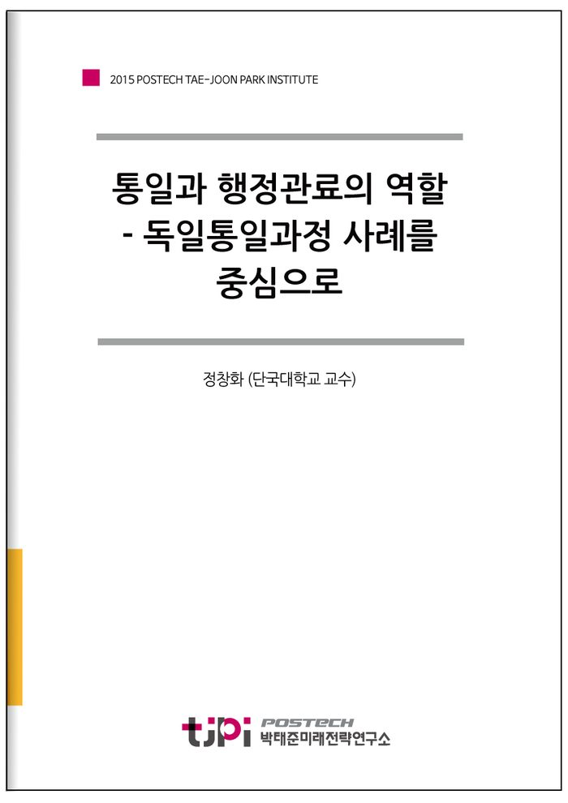

저자 정창화 (단국대학교 교수)보도일 2016-2-25

요 약
통일과 행정관료의 역할
: 독일통일과정 사례를 중심으로
정창화(단국대 행정학과)
1989년 가을부터 시작된 동독지역의 집회는 동독의 전 지역으로 확산되어, 마침내 11월 9일 독일 베를린 장벽의 붕괴로 이어졌다. 이러한 장벽의 개방은 89년 12월 동서독 정상회담과 90년 3월의 동독지역 자유총선거로 연계되었다. 이후 국가조약과 통일조약의 체결로 독일은 ‘90년 10월 3일 통일국가의 과업을 달성하였다. ‘89년 10월 동독지역의 평화혁명이 40여년 분단의 고통을 독일인의 자결권 행사를 통하여 국가적 통일을 달성한 것으로 평가된다. 이는 제2차 대전 이후 1949년 기본법에서 부여된 헌법적 사명을 동서독 스스로 완수한 것이다.
그동안 독일통일 및 통일의 과정적 연구와 관련한 국내의 연구동향은 주로 역사적, 정치적, 경제적 그리고 법학적 관점에서 접근한 것이 대부분이다. 독일 통일을 미시적 그리고 행정학적 시각으로 접근한 연구는 다소 미흡하다. 특히, 통일과정을 관료 또는 덩어리조직으로서 관료제를 통하여 연구된 것은 한국뿐만 아니라, 독일의 경우에도 매우 미흡하다.
관료(Bürokratie)는 공법(公法)상의 근무‧충성관계로부터 공권력을 행사하는 고권(Hoheit)적 지위에 있으며, 통치기구에서 전문화된 행정막료(Verwaltungsstab) 즉 공무원을 의미한다(Bogumil & Jann, 2009: 339). 따라서 관료는 의사결정에 영향력을 미치는 조직의 일부(Teil einer Organisation)로서 표현될 수 있다. 즉, 관료 또는 관료제는 행정조직이 법치주의하에서 체현된 구체적인 모습으로서 “덩어리조직”으로 표현될 수 있다. “덩어리조직”으로서 관료는 통일과정에서 일종의 “정밀기계장치”와 같이 작동되었다. 서독 연방정부의 조직구조와 체계를 통하여 법치행정적인 행정작용으로서 독일의 내적통합을 달성하였다.
따라서 본 연구에서는 덩어리조직으로서 행정관료가 독일의 통일과정에서의 어떠한 역할과 기능을 수행했는지 살펴보았다. 이에 우선 독일 행정관료제의 체계적 특성을 국가행정체계, 행정관료체계 그리고 행정관료의 구조에 대하여 파악하였다. 이후 통일과정에서 독일의 행정관료의 역할을 연방수상부의 역할, 법제도형성의 역할, 행정질서형성의 역할 그리고 민주시민교육의 지원 역할 등으로 기술하였다. 마지막으로 한반도 통일과 행정관료의 역할을 제도통합을 위한 질서형성의 역할과 민주시민교육의 제도화 및 지원의 역할에 대하여 기술하였다.
통일관련 국가 체계(System)의 통합은 구조(structure)와 프로세스(process)의 완결성을 통하여 균형점(equilibrium)을 형성하는 것이다. 국가의 골간인 국법의 통합과 내부의 과정적 통합의 이면에는 ‘정밀기계장치’와 같은 덩어리조직으로서 행정관료의 역할이 있었다. 특히, 부처관할권 원칙이 착근된 서독정부의 입장에서 관료는 정책형성 및 정책조정의 역할을 수행하였다. 특히, 잘 훈련된 국·과장급 행정관료가 통일전후의 내적통합을 위한 정책형성 및 조정과정에서 매우 중요한 역할을 수행하였다.
- 2015년도 박태준미래전략연구소 연구논문
목 차
정창화
단국대학교 행정학과 교수
학력
한국외국어대학교 독일어학과 졸업 독일 Speyer국립행정대 행정학석사
독일 Speyer국립행정대 행정학박사(Dr.rer.publ.)
주요경력
현 단국대학교 행정학과 교수 한독사회과학회장
한국행정학회 연구위원장(2015) 한국행정연구원 수석연구원 역임
대통령자문 정부혁신지방분권위원회 위원 역임 대통령소속 지방분권촉진위원회 위원 역임
주요저서 / 논문
「입법영향평가(GFA) 제도의 비교연구」
「독일의 공직제도에 관한 연구」
「유럽통합모델과 남북한 통합모델간의 비교분석」
『간문화주의와 다양성관리』(공저)
『간문화성과 한국의 정체성』(공저)
내 용
[2015 연구논문] 통일과 행정관료의 역할 - 독일통일과정 사례를 중심으로
정창화 (단국대학교 교수)